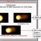

<!DOCTYPE html>
<html lang="en">
 <head>
<!-- Favicon -->
<link rel="shortcut icon" href="../../favicon.ico">
  <meta charset="utf-8"/>
  <title>
   Proof of DNA Damage From Cell Phone Radiation Exposure
  </title>
  <meta content="Post on /v/Conspiracy from 2015-02-22 by BadDog." name="description"/>
  <meta content="Proof of DNA Damage From Cell Phone Radiation Exposure" property="og:title"/>
  <meta content="Post on /v/Conspiracy from 2015-02-22 by BadDog." property="og:description"/>
  <link href="../../static/css/page.css" rel="stylesheet"/>
  <meta content="https://voat.conspiracy.hackliberty.org/thumbnails/04/6c/046cfadf-e9a8-4450-ae55-0f892464fe3e.jpg" property="og:image"/>
  <meta content="https://voat.conspiracy.hackliberty.org/v/conspiracy/54519.html" property="og:url"/>
  <meta content="width=device-width, initial-scale=1" name="viewport"/>
  <link href="https://voat.conspiracy.hackliberty.org/v/conspiracy/54519.html" rel="canonical"/>
  <meta content="article" property="og:type"/>
  <meta content="Voat /v/Conspiracy Archive" property="og:site_name"/>
  <meta content="en_US" property="og:locale"/>
  <meta content="summary_large_image" name="twitter:card"/>
  <meta content="Proof of DNA Damage From Cell Phone Radiation Exposure" name="twitter:title"/>
  <meta content="Post on /v/Conspiracy from 2015-02-22 by BadDog." name="twitter:description"/>
  <meta content="https://voat.conspiracy.hackliberty.org/thumbnails/04/6c/046cfadf-e9a8-4450-ae55-0f892464fe3e.jpg" name="twitter:image"/>
 </head>
</html>
<body class="dark">
 <header>
  <nav class="navbar navbar-dark bg-primary">
    <a class="navbar-brand" href="../../index.html">/v/Conspiracy Archive</a>
    <div class="navbar-collapse">
      <ul class="navbar-nav">
        <li class="nav-item">
          <a class="nav-link" href="../../date/page-1.html">Date</a>
        </li>
        <li class="nav-item">
          <a class="nav-link" href="../../comments/page-1.html">Comments</a>
        </li>
        <li class="nav-item">
          <a class="nav-link" href="../../search.html">Search</a>
        </li>
        <li class="nav-item dropdown">
          <a class="nav-link dropdown-toggle" href="#" id="navbarDropdown" role="button" 
             data-toggle="dropdown" aria-haspopup="true" aria-expanded="false">
            subreddits
          </a>
          <div class="dropdown-menu" aria-labelledby="navbarDropdown">
            <a class="dropdown-item" href="https://reddit.conspiracy.hackliberty.org">r/conspiracy</a>
            <a class="dropdown-item" href="https://reddit.pizzagate.hackliberty.org">r/pizzagate</a>
            <a class="dropdown-item" href="https://voat.conspiracy.hackliberty.org">v/conspiracy</a>
            <a class="dropdown-item" href="https://voat.pizzagate.hackliberty.org">v/pizzagate</a>
          </div>
        </li>
      </ul>
    </div>
  </nav>
</header>

 <div id="container">
  <!-- array (
  'submissionid' => 54519,
  'creationDate' => '2015-02-22 21:33:23',
  'domain' => 'rfsafe.com',
  'formattedContent' => NULL,
  'isAdult' => 0,
  'isAnonymized' => 0,
  'subverse' => 'Conspiracy',
  'thumbnail' => '046cfadf-e9a8-4450-ae55-0f892464fe3e.jpg',
  'title' => 'Proof of DNA Damage From Cell Phone Radiation Exposure',
  'url' => 'http://www.rfsafe.com/dna-damage-from-cell-phone-radiation-exposure/',
  'userName' => 'BadDog',
  'archivedLink' => NULL,
  'archivedDomain' => NULL,
  'isDeleted' => 0,
) --><div class="content" role="main">
   <div class="sitetable linklisting" id="siteTable">
    <div class="submission id-54519 link type-text" id="submission-54519">
     <a name="submissionTop">
     </a>
     <p class="parent">
     </p>
     <a class="thumbnail may-blank" href="http://www.rfsafe.com/dna-damage-from-cell-phone-radiation-exposure/" target="_self">
      
     </a>
     <div class="entry unvoted">
      <p class="title">
       <a class="title may-blank" href="http://www.rfsafe.com/dna-damage-from-cell-phone-radiation-exposure/" tabindex="1" target="_self" title="Proof of DNA Damage From Cell Phone Radiation Exposure">
        Proof of DNA Damage From Cell Phone Radiation Exposure
       </a>
       <span class="domain">
        (
        <a href="https://archive.searchvoat.co/search.php?d=rfsafe.com">
         rfsafe.com
        </a>
        )
       </span>
      </p>
      <p class="tagline">
       submitted
       <time datetime="2015-02-22T21:33:23+00:00" title="02/22/2015 9:33:23 PM">
        2015-02-22T21:33
       </time>
       by
       <span class="userattrs">
        <a class="author may-blank" href="https://archive.searchvoat.co/search.php?u=BadDog">
         BadDog
        </a>
       </span>
      </p>
      <ul class="flat-list buttons">
       <li class="first">
        <a class="comments may-blank" href="https://archive.searchvoat.co/v/Conspiracy/54519" rel="nofollow">
         2 comments
        </a>
       </li>
      </ul>
     </div>
     <div class="child">
     </div>
     <div class="clearleft">
     </div>
    </div>
    <div class="clearleft">
    </div>
   </div>
   <div class="horizontal-line">
   </div>
   <div class="commentarea">
    <div class="sitetable nestedlisting" id="siteTable">
     <div class="child id-76793 comment even" style="">
      <div class="entry unvoted">
       <div class="noncollapsed" id="76793" style=";">
        <p class="tagline">
         <a class="author may-blank" href="https://archive.searchvoat.co/search.php?u=VioletteVanadium">
          VioletteVanadium
         </a>
         <span class="userattrs">
         </span>
         <time datetime="2015-02-22T23:33:41+00:00" title="2/22/2015 11:33:41 PM">
          2015-02-22T23:33
         </time>
        </p>
        <div class="usertext-body may-blank-within" id="commentContent-76793">
         <div class="md">
          <p>
           <p>
            <strong>
             TL;DR just because DNA can be damaged when it is isolated and unprotected doesn't mean your skin and cell walls won't stop that damage from happening. Microwave radiation can cook food, so of course it can break down molecules, but it doesn't do so via ionization (like xrays and gamma rays do), instead it's probably just breaking the hydrogen bonds that hold the two strands together (which is not as strong as a molecular bond, instead it's just a happy interaction between partially-positive charged regions and partially-negative charged regions). This could explain why the "tail" is smoother for the microwaves than the one seen for the xrays, which could overcome the covalent bonds of the DNA backbone.
            </strong>
           </p>
           <p>
            I've got issues with how they conducted this experiment.
            <strong>
             There is a big difference between subjecting unprotected DNA to radiation vs. having it surrounded by the nucleus wall, the cytoplasm, and the cell wall then subjecting it to radiation exposure while it's inside its usual protective bubble.
            </strong>
            That's why we don't just have DNA floating around willy-nilly. It's a complicated molecule, and it contains very important information. It behooved our ancestors to develop biological protections for it, such as containing it in the nucleus of the cell and developing skin.
           </p>
           <p>
            As far as skin goes, the outer layer is dead cells and the live cells are protected somewhat. Yes, higher frequency radiation (eg UV or xray radiation) can pass through this protection, and if the lower layers with the live cells get damaged to badly, you get skin cancer. It also helps to put the size of these waves into context. Higher frequency radiation has smaller wavelengths, so it can pass through smaller openings. X-ray radiation, for example, is small enough that it can pass through skin. That's why we can use it to see inside the human body. UV radiation gets is mostly blocked by the skin, but UV radiation of higher frequencies can make it deep enough into the skin to damage the underlayers and cause cancer. Infrared radiation does not pass through skin, instead it gets absorbed in the form of heat. This heat moves from the outside inwards relatively slowly, which is why a steak can look cooked on the outside but still be rare in the middle. Microwave radiation has a larger wavelength than all of these. You know those little holes in the metal part of the window of your microwave? They are smaller than the wavelength of the microwaves, which is nice because it allows you to see your food cooking without getting heated up yourself.
           </p>
           <p>
            High frequency radiation can knock the electrons off the molecule, leading to fragmentation. This is undeniably bad. However, RF radiation is nonionizing. It doesn't have enough energy to rip the electrons away. The molecules still absorb energy, but since the energy isn't ridiculously high, it simply causes the electrons to go into higher energy levels. Then, the electrons release this energy in the form of photons and return to their ground state. In the case of microwave radiation, the photons released are not energetic enough for us to see, so we tend to just call them heat. RF radiation doesn't pose any danger to our cells, other than thermal danger. If you sit inside a running microwave, you will get really hot and start cooking. However, if you don't notice your head getting hot as you are talking on the phone, you're gonna be ok. And even if this did happen, you would remove yourself from the vacinity of your cellphone before any major damage happens. Do you keep your hand on a stove eye if it starts burning you? Of course not. And btw, the infrared radiation your oven emits when you open the door to pull your food out is of a higher frequency than that of your cellphone (that's why you can see the heating elements turn red and why your face gets hot much faster).
           </p>
           <p>
            <a href="http://www.newton.dep.anl.gov/askasci/gen99/gen99445.htm">
             Here's a relevant link to a Q&amp;A with a scientist that works for the Argonne National Lab, which isn't trying to sell you anti-RF accessories that are completely unnecessary
            </a>
           </p>
          </p>
         </div>
        </div>
        <ul class="flat-list buttons">
         <li class="first">
          <a class="bylink" href="https://archive.searchvoat.co/v/Conspiracy/54519/76793" rel="nofollow">
           link
          </a>
         </li>
        </ul>
       </div>
      </div>
     </div>
     <div class="child id-76743 comment even" style="">
      <div class="entry unvoted">
       <div class="noncollapsed" id="76743" style=";">
        <p class="tagline">
         <a class="author may-blank" href="https://archive.searchvoat.co/search.php?u=benoliver999">
          benoliver999
         </a>
         <span class="userattrs">
         </span>
         <time datetime="2015-02-22T22:34:32+00:00" title="2/22/2015 10:34:32 PM">
          2015-02-22T22:34
         </time>
        </p>
        <div class="usertext-body may-blank-within" id="commentContent-76743">
         <div class="md">
          <p>
           <p>
            Is this really the best source for such a topic? This is a company that sells 'anti-RF' gear.
           </p>
          </p>
         </div>
        </div>
        <ul class="flat-list buttons">
         <li class="first">
          <a class="bylink" href="https://archive.searchvoat.co/v/Conspiracy/54519/76743" rel="nofollow">
           link
          </a>
         </li>
        </ul>
       </div>
      </div>
     </div>
    </div>
   </div>
  </div>
 </div>
<!-- Footer Section -->
<footer class="container-fluid mt-3">
  <p class="small mb-0">
    /v/conspiracy archive has 42504 posts and 159856 total comments.
    <a href="https://git.hackliberty.org/c0mmando/voat-conspiracy-archive/">source code</a>.
  </p>
</footer>

<script src="../../static/js/jquery-3.7.1.slim.min.js"></script>
<script src="../../static/js/comments-toggle.js"></script>

</body>
